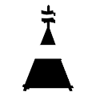 Geodetic Moments - Light & Dark Geodetic Moments 收录了 100 张“缺席”拍摄的照片。 每个大地时刻都将观众置于一个世界的中心，一个被爱的人不在。 你不能忘记它们，但你也不能继续前进。 你可能认识那
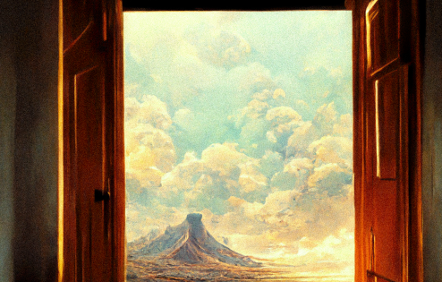 Geodetica Geodetic Moments 集合中有子主题供查看者浏览。 大地标记代表了所爱之人的象征性替代品，现已缺席。 你面对的方式决定了你所看到的。面向前方以获得更积极的看法。向
Geoffrey Woo Geoffrey Woo 是拥有 5 项美国专利的发明家和拥有 3 篇经过同行评审的科学论文的科学家。他是 Archive Technologies Inc. (archive.com)、Health Via Modern Nutrition Inc. (hvmn.com) 和 Anti Fund Investment
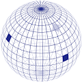 Geohashes (for Everyone) 过去 7 天内没有售出 Geohashes (Genesis Collection)。 geohash将地理位置编码为存储在链上的一串字母和数字。故意省略图像和位置，以供其他人解释和
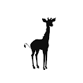 Giraffe Tower Baby 长颈鹿塔 NFT - 常见问题（FAQ） ▶ 什么是长颈鹿塔？ Giraffe Tower 是一个 NFT（非同质代币）集合。存储在区块链上的数字艺术品集合。 ▶ 有多少个 Giraffe Tower 代币？ 总共
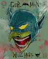 GoBMaN WuZ HeRe by Val Kilmer X Remo “Gob-man Wuz Here”是 Kamp Kilmer Goblin Project 的第一部合作作品。受 Goblintown 项目启发的协作衍生项目（无从属关系）。 每个铸币的人都将收到“Gob-Man Wuz He
GoriByte GoriByte 是 5,000 个独特的 GoriByte NFT 的集合——独特的数字收藏品存在于以太坊区块链上。因为 GoriByte 持有者授予持有者独有的权益，例如品种、索赔、社区赠品等等。 GoriByte NFT - 常见
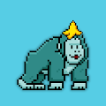 Gorilla Game NFT 1000 只大猩猩和 1000 只豹子在元宇宙中展开狩猎，争夺元丛林之王的终极称号。功能齐全的游戏将于 2022 年推出。拥有 NFT 可以让您提前进入游戏，并且只有 NFT 持有者可
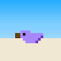 GoroStore GoroStore NFT - 常见问题（FAQ） ▶ 什么是 GoroStore？ GoroStore 是一个 NFT（不可替代代币）集合。存储在区块链上的数字艺术品集合。 ▶ 有多少 GoroStore 代币？ 总共
Goshuin of Bodhisattva Jizo 这是延寿菩萨地藏的“御朱印”。追随者向他祈祷长寿，从疾病中恢复，家庭安全，远离邪恶等等。 地藏菩萨御朱印 NFT - 常见问题（FAQ） ▶ 什么是地藏菩萨
Goshuin of Bodhisattva Kannon 観音菩萨のご朱印です。観音菩萨は慈の菩萨です。求められた愿いに合わせその姿态を変え、あらゆる愿いを叶えることをままれています。 这是观世音菩萨
Gossamer Gods 黑暗、冒险和通往新世界的通道等着你。 Gossamer Gods NFT - 常见问题（FAQ） ▶ 什么是游丝神？ Gossamer Gods 是一个 NFT（非同质代币）集合。存储在区块链上的数字艺术品
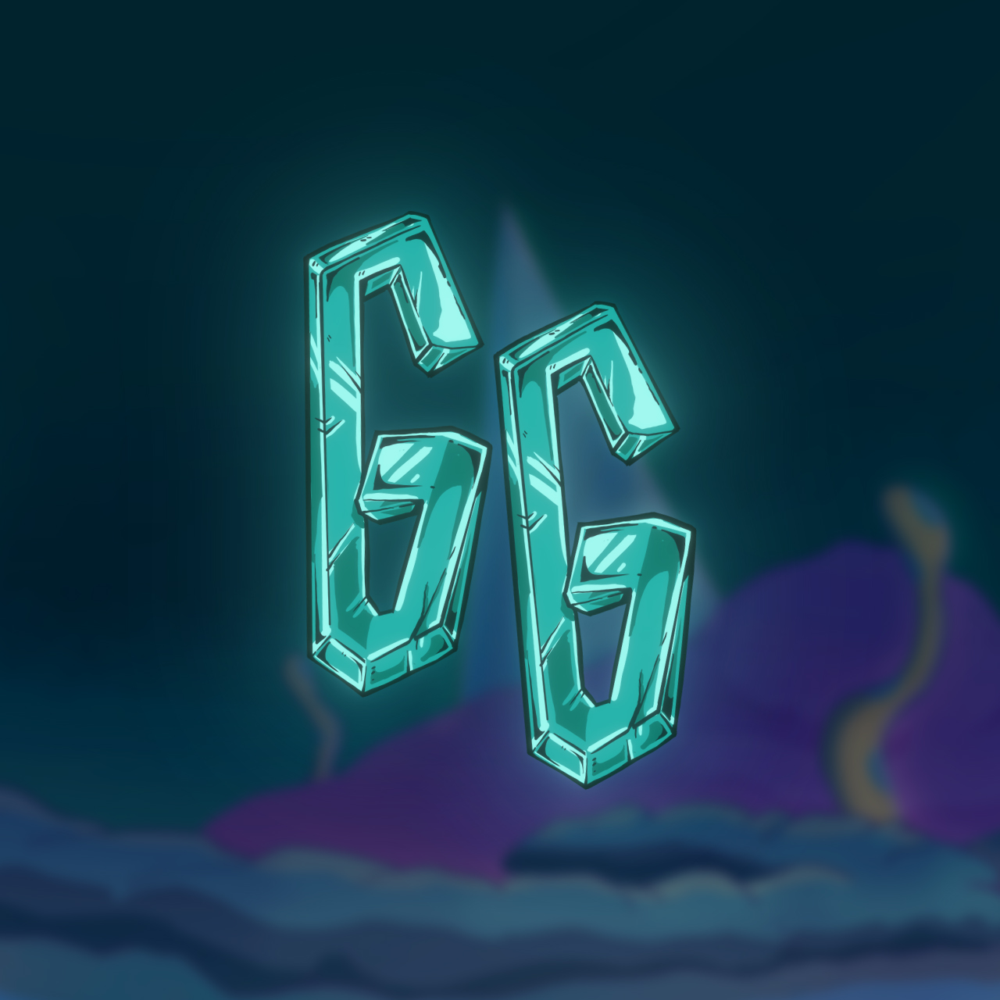 GotchaGatchaNFT Gotcha Gatcha 是由 GG Team 与 MAHHArt 合作的原创 1000 个社区驱动的手绘收藏品项目。由 1000 个系列中的数百个特征与动画传奇 NFT 的独特组合创建而成。 得到了一个被囚禁在地球上千年
GothKidZuki GothKidZuki 统计 创建于 5 个月前 1,111 代币供应 10% 费用 过去 7 天没有出售 GothKidZuki。 GothZukis，但在婴儿形式。不隶属于 AZUKI GothKidZuki NFT - 常见问题（FA
GothZuki 哥特祖基统计 创建于 5 个月前 300 代币供应 5% 费用 过去 7 天内没有出售 GothZuki。 不隶属于 AZUKI 的 300 个 GothZuki 的集合。 GothZuki NFT - 常见问题（FAQ） ▶ 什么是哥特
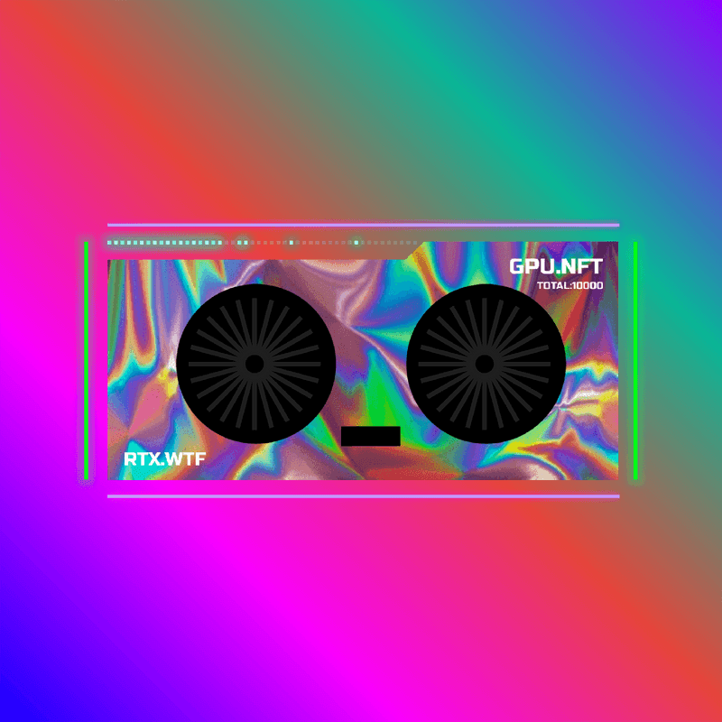 GPU SOLDIER GPU SOLDIER NFT - 常见问题（FAQ） ▶ 什么是 GPU 士兵？ GPU SOLDIER 是一个 NFT（Non-fungible token）集合。存储在区块链上的数字艺术品集合。 ▶ 有多
GQ OG GQ OG 是为 GQ 的超级粉丝提供的动画 NFT 集合，可以提前获得未来的掉落、解锁 GQ 的 Discord 的独家元素等等。 GQ OG NFT - 常见问题（FAQ） ▶ 什么是 GQ OG？ GQ OG 是一个
Gradient Life NFT 555 Gradies 描绘了你在 Gradiverse 中的真实自我。 Gradient Life NFT NFT - 常见问题（FAQ） ▶ 什么是梯度生命 NFT？ Gradient Life NFT 是一个 NFT（Non-fungible token）集
Graffiti Bears OfficiaI 在这个一流的 NFT 系列中推出了 9999 个涂鸦熊，其中包括 99 个单独设计和策划的组合，这 99 个是 10 个特别的 1 个完全独特的涂鸦熊。 Graffiti Bears 官方 NFT NFT - 常见问题（FA
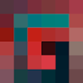 Grailer Grailers 是代表 GrailersDAO 成员的 999 个 NFT 的集合，GrailersDAO 是一个支持生成艺术家和更广泛的生成艺术生态系统的收集社区。每个代币也是Stefano Contiero 创
Grainy Heroes 过去 7 天没有出售粒状英雄。 独特的手绘像素艺术风格的人物。 路线图（2 月）： 抽取20位英雄 推特发布 行进 抽取50位英雄 1 ETH 交易量 网站启动 Grainy Heroes NFT - 常
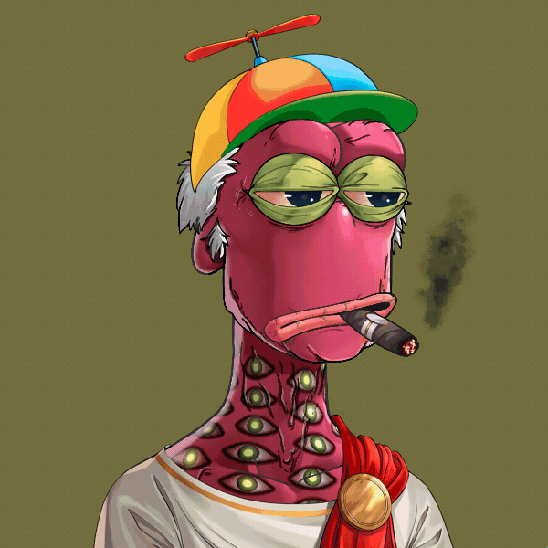 Grandpa Rare Apepe YC 原始爷爷猿：区块链验证。午睡时间结束了。毕竟，他是最聪明的。 OG Grandpa Apes 是 5,000 个独特的 Grandpa Ape NFT 的集合——生活在以太坊区块链上的独特数字收藏品。您的 Grandpa Ape
GrandpaApes 午睡时间结束了，毕竟他是最聪明的。Grandpa Apes 是 5,000 个独特的 Grandpa Ape NFT 的集合，是生活在以太坊区块链上的独特数字收藏品。您的 Grandpa Ape 可兼作您的会员卡
GrandsonNFT 孙子是一个 MEME 社区和 NFT 农业项目，涉及一个有争议的人物 - 孙宇晨。可以从 whoisgrandson.com 上的农业（赌注、褶边等）获得各种 NFT。不要买$SON，感受一下！！ 作为
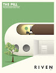 Grant Riven Yun Early Works 《Grant Riven Yun - Early Works》是Yun在数字艺术生涯初期（2016-2017）创作的一系列作品。每件作品都是在 Microsoft PowerPoint 上使用 1 层创建的，通过使
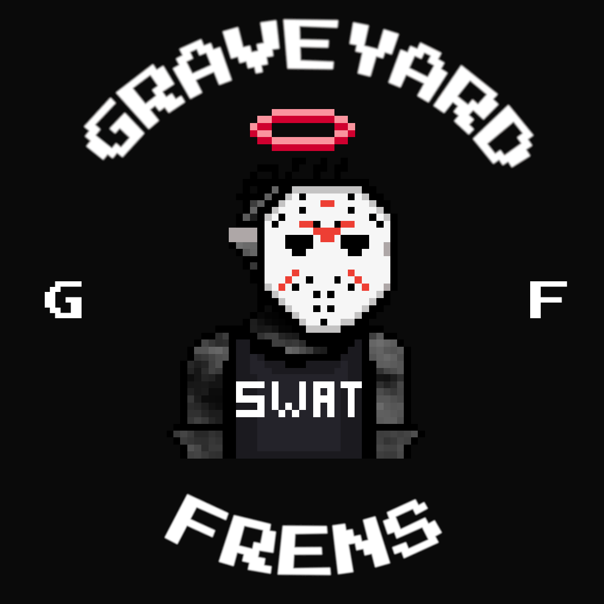 Graveyard Frens 墓地狂热者 Graveyard Frens 是生活在以太坊区块链上的 1111 个随机生成的收藏品的集合。帮助僵尸从邪恶的科学家手中逃脱，作为回报，僵尸将以 $GRAVE 奖励您。1 美元墓地 = 1
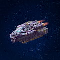 Gravis Finance (A) steroid Mining First Ship Collection Gravis Finance 是一个将 DeFi 平台、游戏内资产的 NFT 市场和 Evervoid 游戏结合在一起的生态系统。我们提供所有必要的工具来管理您在任何链上的加密资产。 通常，我们 Gravis Finance 会做一
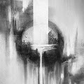 GRAY ART EDITIONS Samuel Gray 的版本 NFT 艺术品。 在 2022 年 4 月部署的 Manifold 自定义智能合约上作为 ERC1155 代币铸造。 GREY ART EDITIONS NFT - 常见问题（FAQ） ▶ 什么是 GREY ART EDITIONS？ GREY ART EDITIONS 是一个
Gray Boys Gray Boys 是 10,000 个生成 NFT 的集合，它们是 The Mothership 的成员。 Gray Boys' Mothership 是第一个将 NFT 所有权验证、其他蓝筹项目的特权和效用代理给所有 Grey Boy 持有者的实验。Grey Boy 持有者
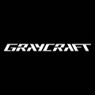 GRAYCRAFT 作为 GRAYCRAFT 系列的第一个声明，GRAYCRAFT1 是先行者中的先行者，为所有人铺平道路。 我们对 GRAYCRAFT1 的愿景是创造一件可以穿越现实各个方面的艺术品。GR
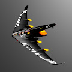 GRAYCRAFT Collaborations GRAYCRAFT 协作统计 创建于 11 个月前 2 代币供应 5% 费用 过去 7 天内没有售出 GRAYCRAFT Collaborations。 空间体验是一种被分享的特权。发现与我们最喜欢的一些
GRD KRICE 🎂 krice 是 grdswap 的完结的 的 是 是 是 是 是 是 的 一一一一 一一一一 庞庞庞庞。 🎂 Krys 项目是 GRDSWAP 的一个完全随机的 3D NFT PFP 项目。这是 GRDSWAP 的一个新项目，旨在建立一个庞大的社区
Great Apes City Great Apes 俱乐部是 100 个独特的 Great Apes NFT 的集合——生活在 Ethereum/Polygon 区块链上的独特数字收藏品。您的 Great Apes 可兼作您的 Great Apes 俱乐部会员卡，并授予会员专享福利，其中第一个是
Great Canadian Beaver Club (GCBC) The Great Canadian Beaver Club 是一个原创的私人俱乐部，它发布了 10,420 个 NFT 的集合，这些 NFT 存在于以太坊区块链上的 ERC-721 合约上。拥有超过 250 多个由才华横溢的 Dino Tomic 手绘的特征，每个
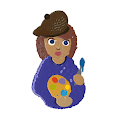 Great Expectations HENI 很高兴推出 The Great Expectations NFT 系列，其中包含 Damien Hirst 创作的 10,000 件独特艺术品。继他为 Drake 的专辑封面创作的艺术作品之后，NFT 展示了类似表情符号的孕妇网格，其形状
Great Goats: Official Great Goats 是在整个链条中漫游的 11,111 只山羊的独家收藏。做一只山羊。你的身份很重要。生态系统的标签。社区紧随其后 Great Goats Club NFT - 常见问题（FAQ） ▶ 什么是大山
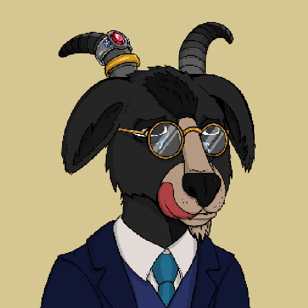 Great Poly Goats Great Poly Goats NFT - 常见问题（FAQ） ▶ 什么是大聚山羊？ Great Poly Goats 是一个 NFT（非同质代币）集合。存储在区块链上的数字艺术品集合。 ▶ 有多少个 Great Poly Goats 代币？ 总
Greedy Gramps OfficiaI NFT Gramps.io NFT 的 Greedy Gramps - 常见问题（FAQ） ▶ Gramps.io 的 Greedy Gramps 是什么？ Gramps.io 的 Greedy Gramps 是一个 NFT（不可替代令牌）集合。存储在区块链上的数字艺术品集合。 ▶ Gramps.io 代币的 Greedy Gramps 有多
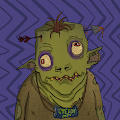 greedygoblins.wtf greedygoblins.wtf NFT - 常见问题（FAQ） ▶ 什么是 greedygoblins.wtf？ greedygoblins.wtf 是一个 NFT（Non-fungible token）集合。存储在区块链上
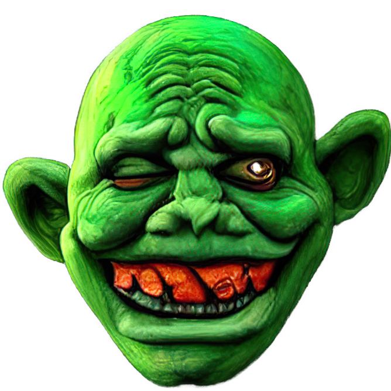 Green Goblins And Shit 有史以来第一个 100% AI 生成具有所有者相关元数据的 PFP 和艺术收藏：当你囤积超过 10 个地精时，它们都会变成同样由 AI 制作的 Mystic Shit，所以你可能真的喜欢它
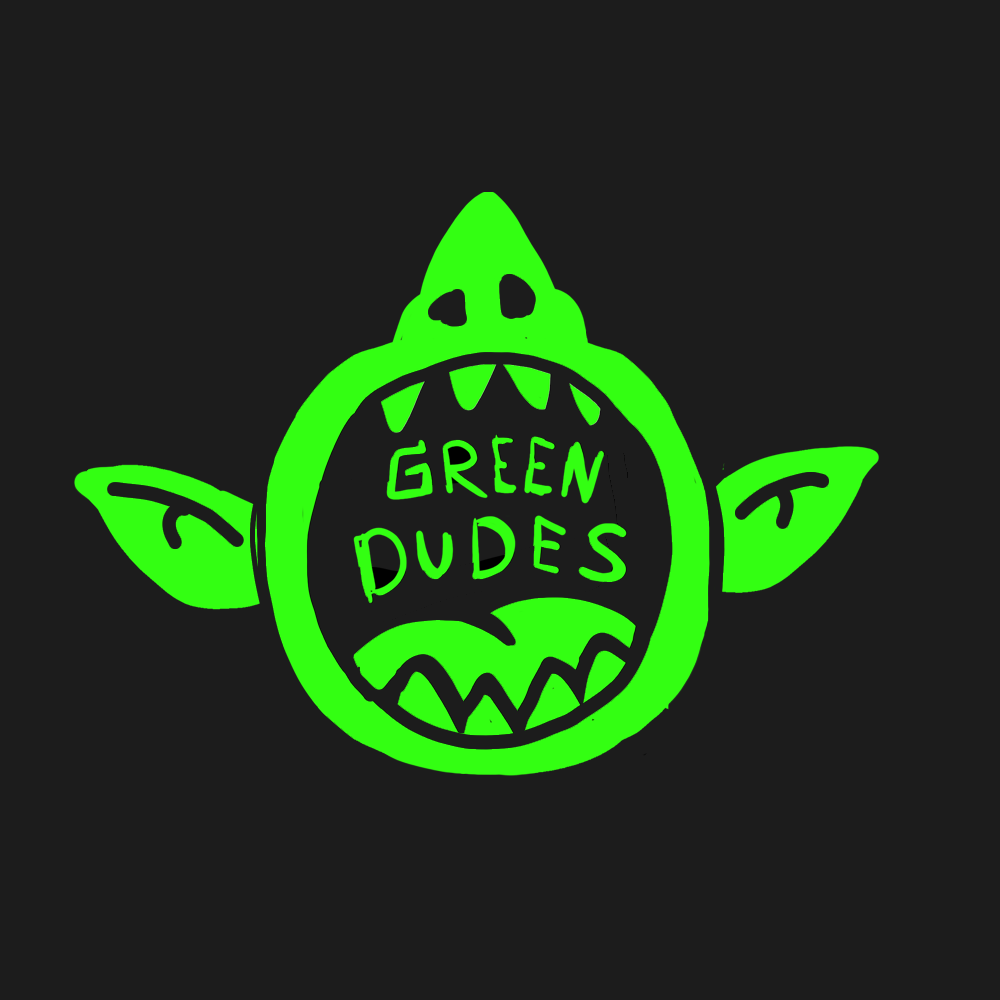 greendudes_wtf greendudes_wtf NFT - 常见问题（FAQ） ▶ 什么是 greendudes_wtf？ greendudes_wtf 是一个 NFT（非同质代币）集合。存储在区块链上的数字艺术品集合。 ▶ 有多少 greendudes_wtf 代
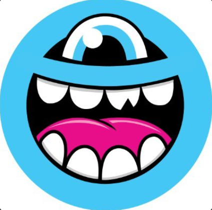 GREG MIKE GREG MIKE NFT - 常见问题（FAQ） ▶ 什么是 GREG MIKE？ GREG MIKE 是一个 NFT（不可替代代币）集合。存储在区块链上的数字艺术品集合。 ▶ 有多少个 GREG MIKE 代币？ 总共
Gregory Marshall - Miami Collection 设计了一些世界上最好的超级游艇，游艇设计公司 Gregory C. Marshall Naval Architect Ltd. 已经建立了世界顶级造船公司之一的声誉。35 多年来，创始人格雷格·马歇尔 (Greg Marshall) 和他的商业
GRILLZ GANG TICKET 这是一张 Grillz Gang 门票。它为您提供了加入 Grillz Gang 社区的独特而闪亮的可能性。 GRILLZ GANG TICKET NFT - 常见问题（FAQ） ▶ 什么是 GRILLZ 帮派票？ GRILLZ GANG TICKET 是一个 NFT（非同质代币
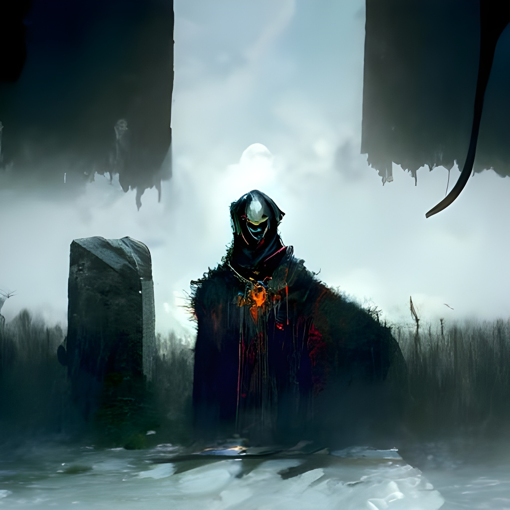 Grim Soul Genesis Pass Grim Soul Genesis Pass NFT - 常见问题（FAQ） ▶ 什么是冷魂起源通行证？ Grim Soul Genesis Pass 是一个 NFT (Non-fungible token) 集合。存储在区块链上的数字艺术品集合。 ▶ 冷魂创世通行证有多少？ 总共